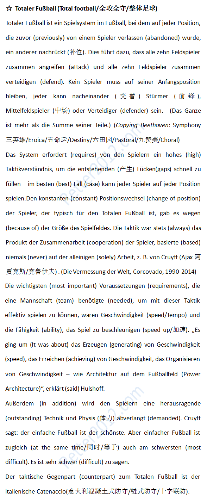

返回主页
足球世界杯(FIFA World Cup)

全攻全守（Total football）不是德国发明的，但德国把全攻全守发挥到了极限并夺得了世界杯冠军(Die Weltmeisterschaft/World Cup)。
中央五台的老师们把全攻全守（Total football）翻译成整体足球，创造新词。但这些老师没有注意到，德国夺冠时巴西里约热内卢基督山披上了德国国旗（黑红金）。何等壮观！！
名言佳句（亚里士多德）
名言佳句（俾斯麦）
Piratenpartei
君子和超人（魔道）
一生中只追求完美
德国队历史上共八次杀入世界杯决赛，四次捧杯（1954年，1974年，1990年、2014年），仅次于五星巴西，与意大利并列为夺得第二多世界杯冠军的球队。
2014：奥巴马西点演讲
战舰美利坚号
The New Cold War: China vs Japan
舆论战、心理战、法律战
大家伙最近不是常常了解到西方（欧洲北美日本）又一次都生活在水深火热之中了吗？不幸又被 Kennan料到（ "The Sources of Soviet Conduct", The "long telegram"）。台湾人民就曾经生活在水深火热之中，那时我们还在毛主席的领导之下。
德国何以获得以色列信任
德语名言：激励奋斗（5）
德语名言：激励奋斗（6）
文摘（战争和航海）
“优等民族”考
version:1.0; jobnet@188.com © retter2012.com